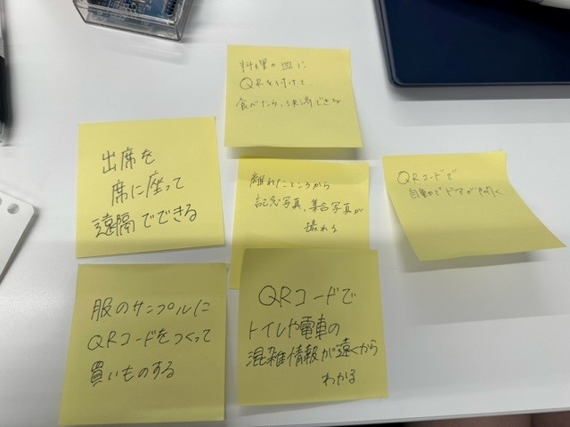
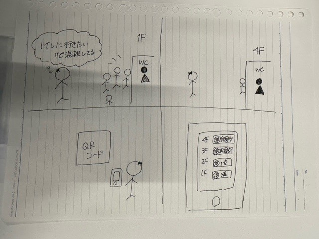

IoTに関して:遠隔で操作・管理することで、どのような新しいサービスが考えられるか。
１．グループワークした内容
グループワークでQRコードなどを使って遠隔で私たちの身の回りでIoTを使えるものを考えた

・出席を席に座って遠隔でとれる
・服のサンプルにQRコードを釣って買い物できる
・料理の皿にQRコードをつけて食べたら席で決済できる
・離れたところから記念写真、集合写真が遠隔でとれる
・QRコードでトイレや電車の混雑状況が離れたところからわかる
・QRコードで離れた場所からドアの鍵を開けられる
2.自分で考えた内容
この中から私は「QRコードでトイレや電車の混雑状況がわかる」というアイデアをストーリーボードに書いた。

このようなことができるようになると混雑が緩和され、長時間待たず、電車で座れるなどストレスの少ない生活ができるのではないだろうか。
このアイデアを意見交換すると、「あったら便利」「これほしい」などといってもらえたので、実現し周りに増えればいいなと感じた。